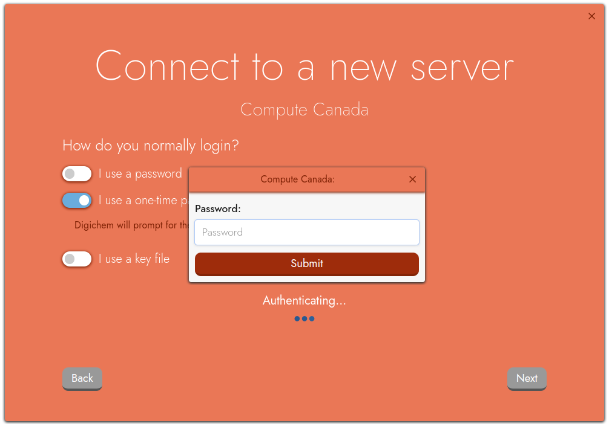
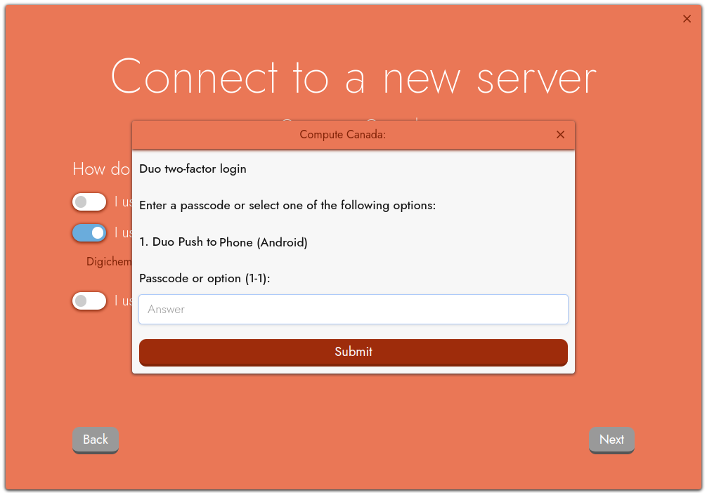
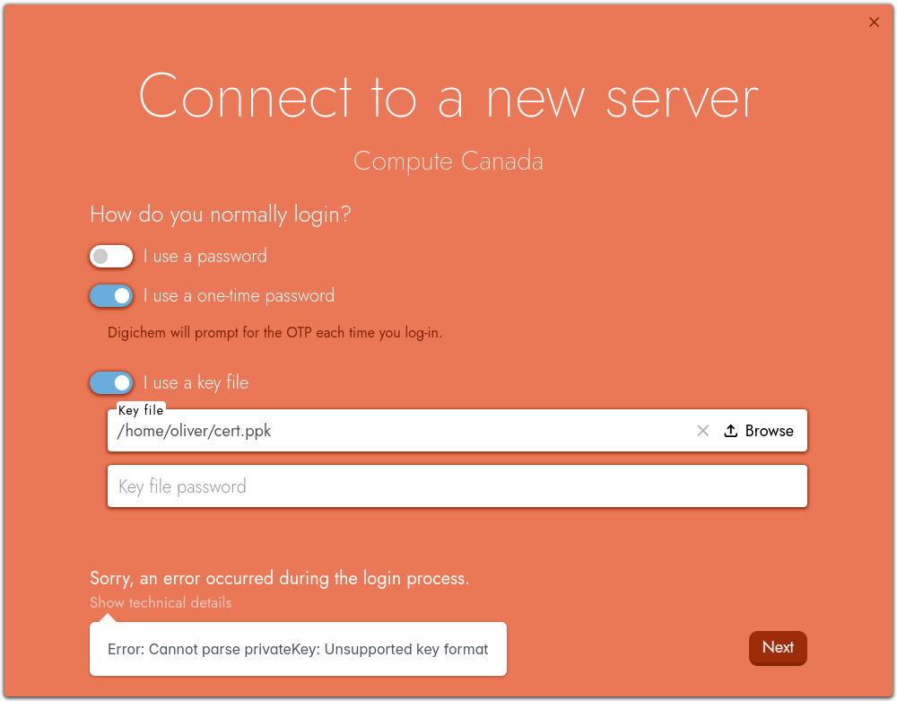

Compute Canada (DRAC)#
The Digital Research Alliance of Canada, commonly referred to simply as ‘Compute Canada’, is the nation-wide HPC system for Canadian research institutions. Compute Canada is not a single cluster, but rather is a consortium of different HPC clusters that are all accessed by a shared interface. If you are based at a research institution in Canada, you most likely use a Compute Canada cluster.
Compute Canada clusters support either password or SSH key-file based logins, and all clusters currently mandate two-factor authentication using the DUO authentication system.
For general instructions on getting started with Compute Canada, please see https://docs.alliancecan.ca/wiki/Getting_started.
Digichem supports both password-based and key-file-based logins for Compute Canada.
Password Logins#
If you normally login to Compute Canada using a password, you can follow these setup instructions.
Follow the first steps of the getting started guide as normal.
When you are asked ‘How do you normally login?’, you should untick the I use a password option, and tick the I use a one-time password option instead. Leave the I use a key file option unticked:

Hint
Even though you are using a password, you should not use the ‘I use a password’ option. This is because all passwords for Compute Canada are provided ‘on-demand’ (which is what a ‘one-time password’ is) even though your password rarely changes.
When you click Next, you will first be prompted for your normal password:
Enter this, and then click Submit.
Next, you will be prompted for your DUO second factor:
You can either enter a passcode from the DUO app directly, or enter a number to send a push notification to one of your supported devices. Enter your passcode or device number, and then click Submit once more.
Digichem will then log you in, and you can continue with the remainder of the getting started guide.
SSH Key Logins#
If you normally login to Compute Canada without using a password, you can follow these setup instructions.
Follow the first steps of the getting started guide as normal.
When you are asked ‘How do you normally login?’, you should untick the I use a password option, and tick both the I use a one-time password and I use a key file options:

Select your private key file from your local machine. If your private key is encrypted, remember to also specify the password in the Key file password box:

On Windows machines
If you generated your private key using PuttyGen, you may receive an error in Digichem like this:
Don’t panic, your private key is simply saved in the wrong format. See how to convert it here.
When you click Next, you will be prompted for your DUO second factor:

You can either enter a passcode from the DUO app directly, or enter a number to send a push notification to one of your supported devices. Enter your passcode or device number, and then click Submit once more.
Digichem will then log you in, and you can continue with the remainder of the getting started guide.
Converting Putty Keys#
Digichem cannot directly read private keys stored in the Putty format (the .ppk file). Fortunately, it’s easy to convert them using PuttyGen.
Open PuttyGen.
Click on Conversions and then Import key, and load your private key file (.ppk):

Next, click on Conversions and then Export OpenSSH key, and save your new private key file somewhere you can remember:

You can now use your freshly converted private key file to connect to your server in Digichem.